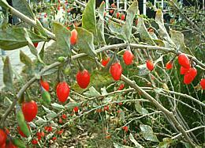

[Fructus Lycii (pharmacology); Gouqizi (China); Jizi (Singapore); Kuko no mi, Kuko no kajitsu (Japan); Gugija (Korea); dre-tsher-mai-dre-bu (Tibet); Gao Gee (Thailand); Duke of Argyll's tea tree (UK), Tibetan Goji, Himalayan Goji (health food stores); Matrimony Vine; Lycium barbarum & Lycium chinense]
Native to somewhere around Turkey and Eastern Europe wolfberries are now grown worldwide and particularly in China, the main commercial supplier. The berry tastes similar to dried cranberries but is more tart and tastes somewhat of tomato, not surprising since tomatoes are also nightshades.
"Tibetan / Himalayan Goji" products are promoted by "health food" outlets - even though Goji isn't harvested in that region, and any "organic" claims are unlikely to be true - but when has the health food industry ever checked in with reality? Berries from the same Chinese sources can be purchased at a much lower price at Asian markets.
In Chinese traditional medicine wolfberry is said to enhance the immune system and improve eyesight, sperm production, liver function and circulation. Medical studies in China indicate it helps prevent macular degeneration and glaucoma as well as being strong in anticancer antioxidants, but confirming studies have not been done in the West. Photo by Sten Porse distributed under Creative Commons Attribution 2.5/2.0/1.0.
More on Nightshades.
 In the West, wolfberries are generally eaten as a snack straight from the bag, or as a component of various "health food" concoctions. In China they are almost always cooked, often in tonic soups and teas or as a flavoring in congee. In China they are also used as a flavoring in some wines, and in the U.S. a Colorado micro-brewery uses them to flavor beer.